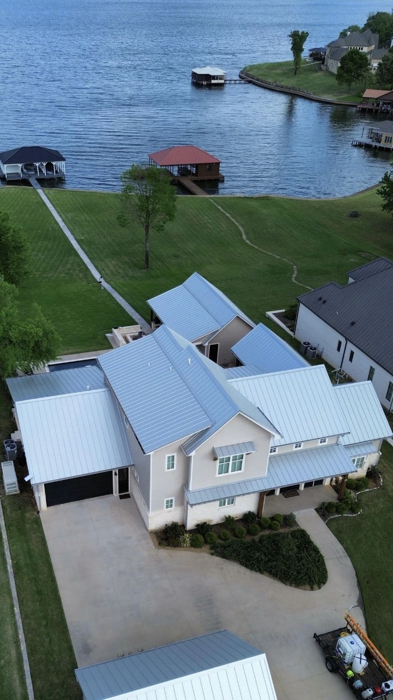
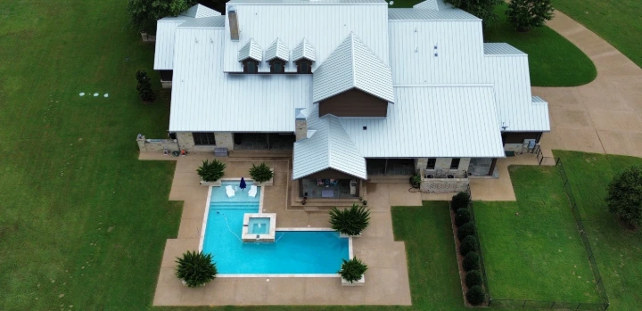

Soft washing + pressure washing
We don’t cut corners.
We clean them.
Careful exterior cleaning for East Texas homes and businesses, with the right process for every surface and protection at every step.


Built around your property
A cleaner home without careless pressure.
Different materials demand different techniques. East Texas Exterior Cleaning combines soft washing and pressure washing to remove buildup while protecting siding, roofing, concrete, landscaping and the details that matter.
✓Property protection before, during and after the job
✓Clear communication from estimate to walkthrough
✓Methods matched to each surface
Exterior care
One call.
A sharper property.
A focused service path helps homeowners understand what can be cleaned and gives every campaign a direct place to convert.
House soft washing
Low-pressure cleaning for siding and painted surfaces, designed to lift organic buildup without harsh blasting.
Concrete cleaning
Professional surface cleaning for driveways, walkways, patios and high-traffic areas.
Roof + exterior care
Property-specific cleaning plans for roofs, fences, decks and commercial exteriors.
Ready when you are
Make the next before-and-after yours.
Call for a straightforward conversation about the property, the surface and the result you want. East Texas Exterior Cleaning will help identify the right approach.
Request your estimate
Tell the team what needs attention and where the property is located. A clear customer path means fewer missed enquiries.